Tema 13.- Angiospermas 2: caracteres reproductivos
| Carlos Romero Zarco, Universidad de Sevilla |
| Introducción |
||||
|
 |
|||
| Simetría de la
flor |
||||||||||
|
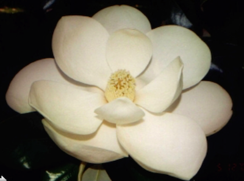 Flor acíclica de Magnolia grandiflora (mgnolio). 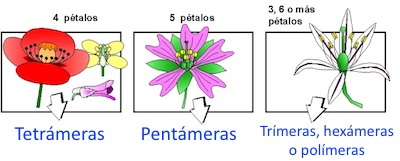 Tipos de flores según las piezas del perianto. De Flodhis (C.R.Z.) 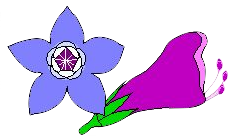 Representación esquemática de dos tipos de
flores en borragináceas: Izda. Borago, actinomorfa;
drcha. Echium, zigomorfa
vista lateralmente.
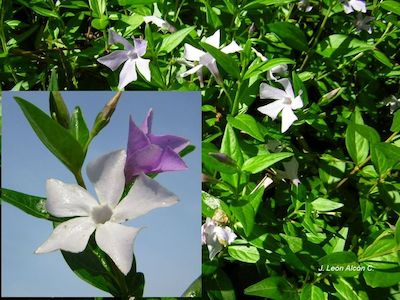 Vinca difformis (apocinácea), con flores que presentan simetría de rotación |
|||||||||
| Envuelta floral:
perianto |
|||||||||||
|
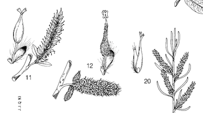 Flores femeninas aclamídeas de Salix
spp.
Modificado de Flora iberica.
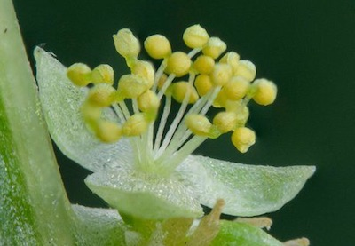 Flor masculina apétala de Mercurialis. De Andrés Ivorra (Facebook) 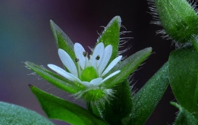 Flor heteroclamídea (diclamídea) de Stellaria media (cariofilácea). Modificada de J.P. Serrano (Flodhis). 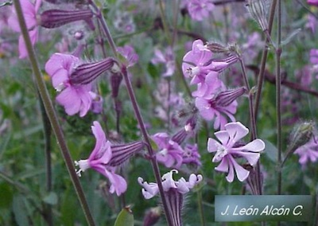 Flores gamosépalas (pero dialipétalas) de Silene colorata (cariofilácea). |
|
||||||||||
| Modificaciones del
perianto |
|||||||||||
|
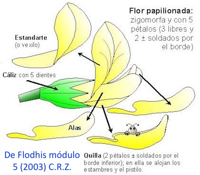 |
||||||||||
|
|||||||||||
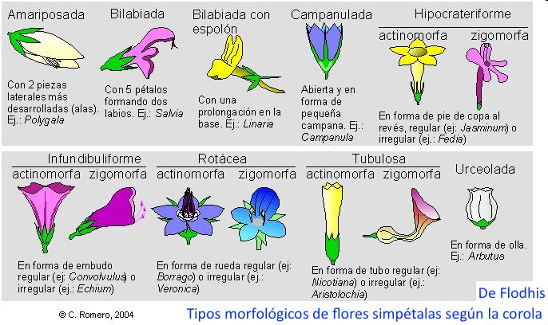 |
|||||||||||
| El androceo y sus
modificaciones |
||||||||||
|
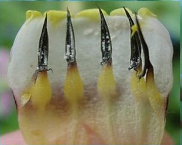 Cerinthe (borraginácea): interior del tubo de la corola mostrando 5 estambres epipétalos. Foto: J.L. Alcón (Flodhis) 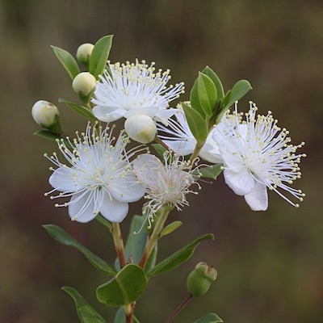 Flor de Myrtus communis, con androceo poliándrico. De J.A. Salvador (Facebook) 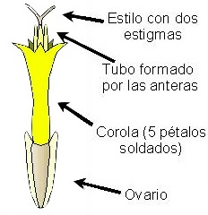 Esquema de un flósculo, flor tubulosa de Anacyclus (Asteraceae). De Flodhis, C.R.Z. |
|||||||||
| El gineceo y sus
variaciones |
||||||||
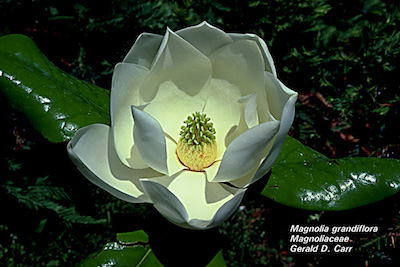 En el centro se observa el gineceo
apocárpico
en forma de pequeña piña
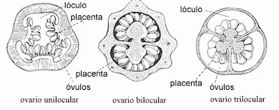 Tres tipos de ovario según el número de lóculos. De Goebel, K. 1933. Organographie der Pflanzen. En la figura de la izquierda se observa
placentación parietal y en las dos de la derecha placentación central.
|
|
|||||||
| Heterostilia |
||||||||
|
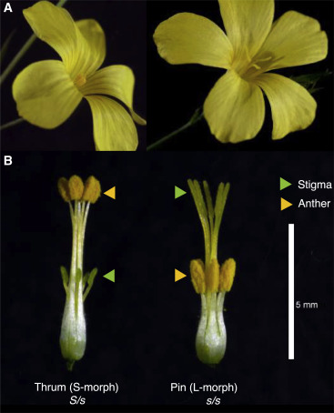 Flores longistilas y brevistilas de
Linum tenue
Gutiérrez-Valencia et al., Genomic
analyses of the Linum distyly supergene reveal
convergent evolution at the molecular level, Current
Biology (2022),
https://doi.org/10.1016/j.cub.2022.08.042.
Maguilla, E., Escudero, M., Ruíz-Martín,
J. and Arroyo, J. (2021), Origin and diversification of
flax and their relationship with heterostyly across the
range. J Biogeogr, 48: 1994-2007.
https://doi.org/10.1111/jbi.14129
|
|
|||||||
| Inflorescencias |
|||||
|
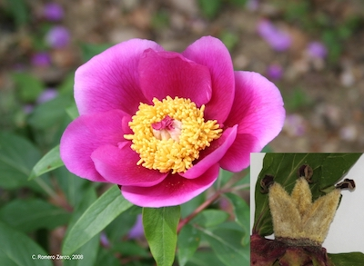 Flor solitaria de rosa de monte (Paeonia
broteroi) C.R.Z. A la derecha, detalle
del fruto inmaduro con 3 carpelos
Abajo: representación esquemática de
diversos
tipos de inflorescencias. Monocasios y dicasios son inflorescencias cimosas. |
||||
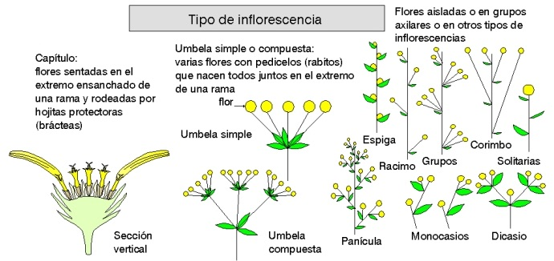 De Flodhis, módulo 1, C.R.Z. (2014) |
|||||
| Los frutos y su
diversidad |
||||||||||||
|
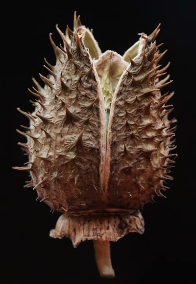 Cápsula valvicida de estramonio (Datura
stramonium, solanácea).
Fruto simple, seco y dehiscente. Foto de J.A. Salvador (Facebook).
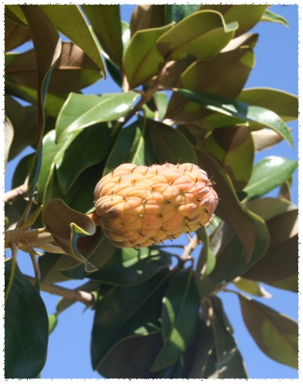 Polifolículo de Magnolia grandiflora. Fruto múltiple, seco y dehiscente. 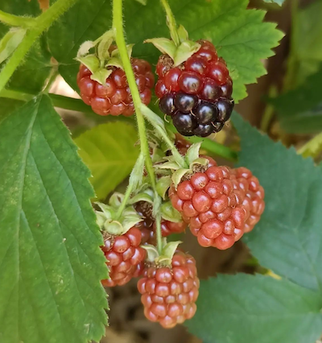 Polidrupas de zarzamora (Rubus ulmifolius, rosácea). Real Jardín Botánico de Madrid (Facebook). Cada "bolita" carnosa es una drupa, fruto carnoso indehiscente con hueso en su interior. |
|
|||||||||||
|
||||||||||||
| Las semillas y su
despersión - Ver también tema
4: semilla |
||||||||||||||
|
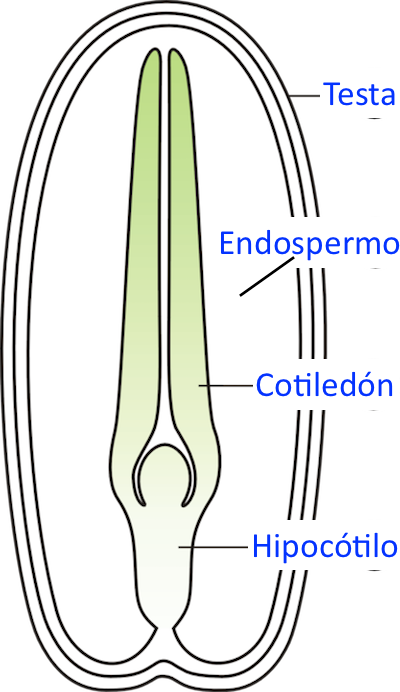 Corte esquemático de una semilla
dicotiledónea.
Modificado de Agnieszka Kwiecień (Nova) - Own work, CC BY 2.5, https://commons.wikimedia.org 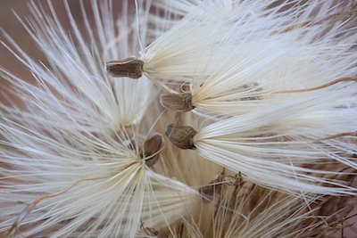 Cipselas con vilano de alcachofa silvestre (Cynara humilis, compuesta). Son frutos reducidos a una capa protectora que envuelve una sola semilla. Foto: J.A. Salvador (Facebook). 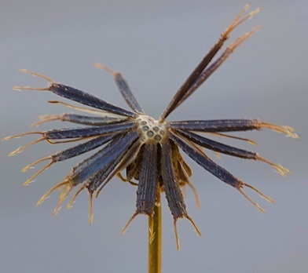 Cipselas de Bidens aurea (compuesta), con vilano formado por dos cerdas en forma de arpón para facilitar la epizoocoria. Foto: J.A. Salvador. 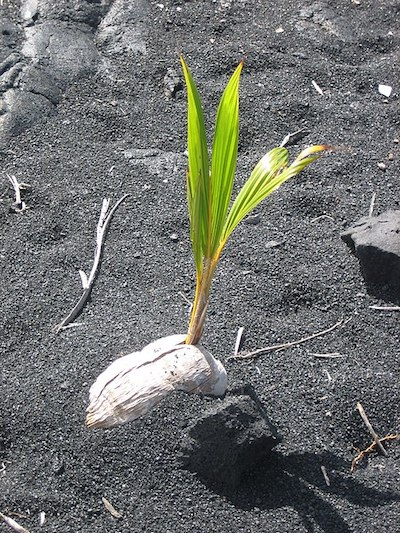 Nuez de coco germinando en una playa. De Wmpearl - Obra propia, Dominio público, https://commons.wikimedia.org |
|||||||||||||
| Resumen |
|